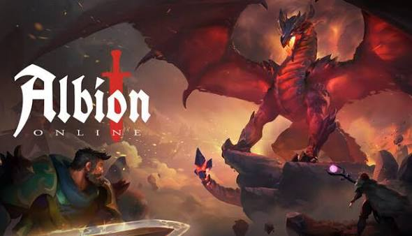

Lula sansiona lei que proibe Albion online no Brasil
"Esse jogo é uma ameaça à cultura brasileira", disse o presidente.
-

Durante esse Domingo, após vencer as eleições, o presidente assinou a lei que proíbe o jogo Albion Online no Brasil. Segundo o presidente, o jogo é uma ameaça à cultura brasileira, e que a proibição do jogo é uma medida necessária para proteger a população, pois ensina a população a coletar recursos, vende-los e comprar equipamentos, o que é uma ameaça à economia do país. O presidente também afirmou que o jogo é viciante e que pode levar a problemas de saúde mental, como depressão e ansiedade. A lei entra em vigor imediatamente, e os jogadores que forem pegos jogando Albion Online no Brasil poderão ser multados ou presos. Diz que as pessoas devem trabalhar para o governo e não tentar progredir de vida, pois quem nasce pobre deve assim permanecer
Em um discurso inflamado para defender a nova medida, fontes ligadas ao governo explicaram a lógica por trás do banimento. Segundo o comitê responsável, a ideia de um cidadão comum começar do zero e enriquecer gerindo seus próprios lucros vai contra o projeto da atual gestão. 'As pessoas devem trabalhar exclusivamente para o governo e não ficar tentando progredir de vida por conta própria nas cidades de Albion', declarou um porta-voz oficial.
Governo fecha o cerco contra o mercado livre virtual: "A economia de Caerleon é uma ameaça à soberania nacional"
Após a assinatura da medida provisória que baniu o MMORPG Albion Online em todo o território nacional, os desdobramentos em Brasília mostram que a decisão foi amplamente articulada pelos ministérios e pela base aliada. O foco da preocupação do governo não é apenas a saúde mental dos jogadores, mas o perigoso modelo econômico ensinado nos servidores do jogo. [Leia também: Receita Federal anuncia taxação de 92% na importação de montarias T8 e itens de luxo virtuais](https://www.google.com/search?q=%23) Em coletiva de imprensa realizada nesta manhã, autoridades detalharam os motivos da sanção. A equipe econômica do governo demonstrou extrema preocupação com a facilidade com que os jogadores acumulam *Silver* (a moeda do jogo). Segundo o Ministro da Fazenda, o sistema de Mercado Negro de Albion estimula a sonegação de impostos e cria uma falsa sensação de que o trabalho duro e a gestão de recursos geram riqueza. O Supremo também foi acionado para garantir a validade da lei. O Ministro Cristiano Zanin, que emitiu um parecer favorável à proibição, foi categórico em sua argumentação jurídica: *"Não podemos permitir que uma jurisdição digital sem regulação estatal, como as chamadas 'Zonas Pretas' (Black Zones), opere impunemente no Brasil. O sistema de 'full loot', onde um cidadão rouba os pertences do outro após um combate, vai contra os princípios da nossa constituição. Além disso, a ideia de que um indivíduo possa começar quebrando pedras e terminar como dono de um império comercial é uma afronta ao controle do Estado."* [Entenda o caso: Jogador é multado em R$ 15 mil após declarar rendimentos de fazenda de cenouras no imposto de renda](https://www.google.com/search?q=%23) Nos bastidores, o tom da base governista é ainda mais duro. Documentos vazados do grupo de trabalho que elaborou o texto da lei indicam que o verdadeiro objetivo da proibição é frear a ambição da juventude. De acordo com o memorando interno que embasou o projeto, o ideal é que a população foque seus esforços em trabalhar para o governo. O texto é explícito ao afirmar que as pessoas "não devem tentar progredir de vida por meios próprios, muito menos em mundos virtuais". Em um trecho polêmico que gerou revolta nas redes sociais, o documento justifica que a estabilidade social depende da manutenção das classes, cravando que "quem nasce pobre deve assim permanecer", evitando frustrações com os chamados delírios do livre mercado promovidos pelas guildas do jogo. O Ministério das Comunicações informou que provedores de internet já foram notificados e o tráfego para os servidores do jogo será bloqueado a partir da meia-noite. Jogadores que tentarem acessar o mundo de Albion usando VPNs estarão sujeitos a trabalho comunitário compulsório em repartições públicas.